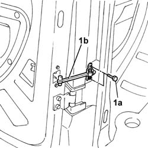
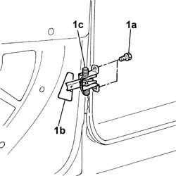

7020E18 rear door flap opening limiter - r+r
- Path
- Procedures > 70 FITTINGS > 7020 LOAD CARRYING COMPARTMENT DOORS > 7020E rear swinging door > 7020E18 rear door flap opening limiter - r+r
- Kind
- repair procedure (removal / refitting; the operation number is the code)
- Applies to
- all engines; all production periods
- Interactive page
- https://sloeber94.github.io/elrnDB-fDbl/en/#/2585078
Applies to: all engines; all production periods
 Removing
Removing
 Refitting
RefittingOp. 7020E34 REAR DOOR FLAP INTERIOR PANEL - R+R
1. Undo the fixing bolts (1a) and remove the moving arm (1b).

Applies to: all engines; all production periods
1. Undo the fixing bolts (1a) and remove, through the opening (1b), the door check strap striker (1c).

Applies to: all engines; all production periods
Refitting
RemovingFit the door check strap striker and tighten the fixing bolts.
Fit the moving arm and secure it with the bolts.